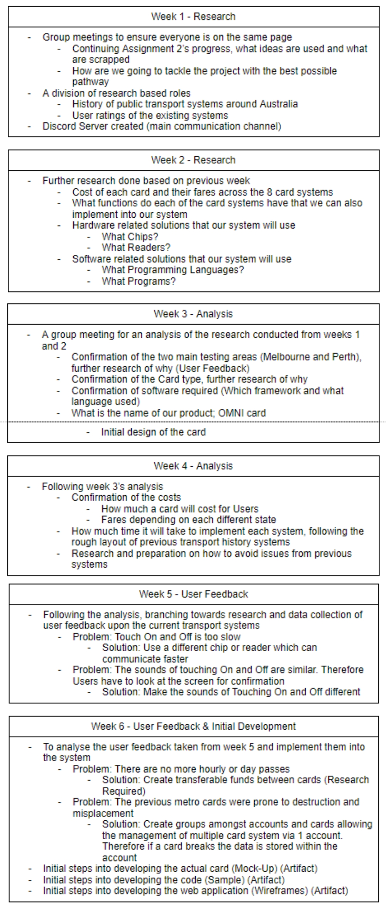

Roles
Due to past experience with other group related work, we have formed a team with an emphasis of communication. Due to the highly collaborative nature of the work, we consider ourselves a collective.. Everyone collaborated together towards the success of the OMNI card. Following the timeline of the project we have completed the first 3 phases and are under the development of the OMNI card. The specifics to what we accomplished each week can be found below;
Extending from this the actual roles that we’ve all had a hand in play would be;
Designers (UX) - Development and Testing methodology we would use for the full 16 week period. Defining user groups, research methods, wireframes and prototypes. (Website Application, Card Lay Out)
Researchers / Programmers - Full spec code, implementation and integration into the system. (Project Research, Project Analysis, Development)
Testing - Evaluation of effectiveness of the new solution through real world user tests (What works, what could use improvement)
Thanks to our weekly meetups and large amount of communication via Discord, we are able to take on multiple roles depending on the milestones and requirements of the week. If we are to follow our timeline the project would be in the beginning stages of the Development phase.